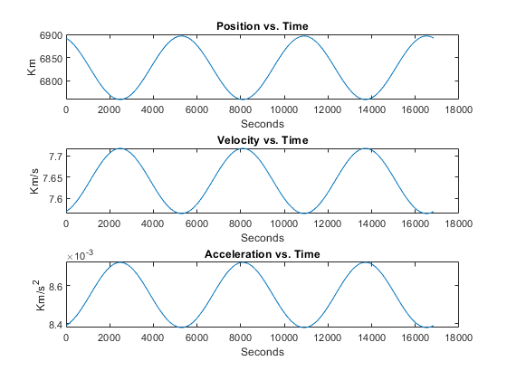
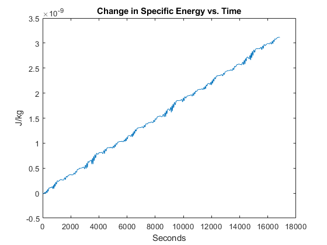
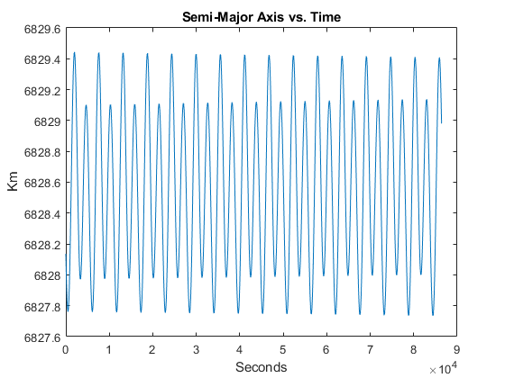
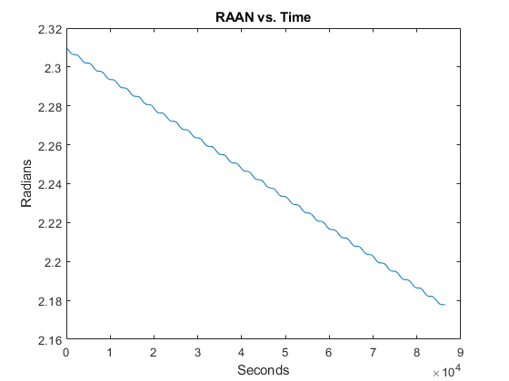
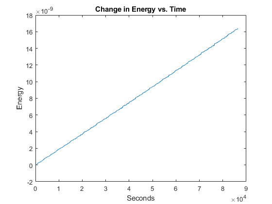

Contents
Problem 2
clear all
clc
y = [4600 3250 3250 -5.537 3.915 3.9154]';
ydot = twobody(0,y);
r0 = [6667.998 -831.435 -1531.486];
v0 = [-1.210185 -7.384715 -1.138699];
y = [r0 v0]';
ydot = twobody(0,y)
ydot =
-1.210185000000000
-7.384715000000000
-1.138699000000000
-0.008119092417092
0.001012372469789
0.001864769061041
Problem 3
r0 = [6667.998 -831.435 -1531.486];
v0 = [-1.210185 -7.384715 -1.138699];
mu = 398600.4415;
[a,emag,i,raan,argp,ta] = rv2oe(r0,v0,mu);
per = 2*pi*sqrt((a^3)/mu);
time = 0:20:(3*per);
odeoptions = odeset('RelTol', 1e-10,'AbsTol',1e-20);
y0 = [r0 v0]';
[T,Y] = ode45(@twobody,time,y0,odeoptions);
rf = Y(length(Y),1:3)
vf = Y(length(Y),4:6)
rt = ((Y(:,1).^2)+(Y(:,2).^2)+(Y(:,3).^2)).^0.5;
vt = ((Y(:,4).^2)+(Y(:,5).^2)+(Y(:,6).^2)).^0.5;
at = zeros(length(time),3);
for i = 1:length(time)
inter = twobody(0,Y(i,:)');
at(i,:) = inter(4:6);
end
at = ((at(:,1).^2)+(at(:,2).^2)+(at(:,3).^2)).^0.5;
fig = 1;
figure(fig);
subplot(3,1,1)
plot(T,rt)
title('Position vs. Time')
xlabel('Seconds')
ylabel('Km')
hold on
subplot(3,1,2)
plot(T,vt)
title('Velocity vs. Time')
xlabel('Seconds')
ylabel('Km/s')
subplot(3,1,3)
plot(T,at)
title('Acceleration vs. Time')
xlabel('Seconds')
ylabel('Km/s^2')
e0 = (((norm(v0))^2)/2)-(mu/norm(r0));
et = ((vt.^2)./2) - (mu./rt);
deltae = et-e0;
fig = 2;
figure(fig);
plot(T,deltae)
title('Change in Specific Energy vs. Time')
xlabel('Seconds')
ylabel('J/kg')
rf =
1.0e+03 *
6.674606093008216 -0.790328889932328 -1.525121121264686
vf =
-1.164986953962358 -7.390208723221724 -1.149053251032248
 
Problem 4
clear all
clc
r0 = [6667.998 -831.435 -1531.486];
v0 = [-1.210185 -7.384715 -1.138699];
y = [r0 v0]';
ydot = twobodyj2(0,y)
ydot =
-1.210185000000000
-7.384715000000000
-1.138699000000000
-0.008127595529765
0.001013432725878
0.001871908477782
Problem 5
clear all
clc
mu = 398600.4415;
time = 0:100:86400;
odeoptions = odeset('RelTol', 1e-10,'AbsTol',1e-20);
r0 = [6667.998 -831.435 -1531.486];
v0 = [-1.210185 -7.384715 -1.138699];
y0 = [r0 v0]';
[T,Y] = ode45(@twobodyj2,time,y0,odeoptions);
rf = Y(length(Y),1:3)
vf = Y(length(Y),4:6)
rt = Y(:,1:3);
vt = Y(:,4:6);
a = zeros(length(rt),1);
for i = 1:length(time)
a(i) = rv2oe(rt(i,:),vt(i,:),mu);
end
fig = 3;
figure(fig);
plot(time,a)
title('Semi-Major Axis vs. Time')
xlabel('Seconds')
ylabel('Km')
perorbit = 2*pi*sqrt((a(1)^3)/mu);
raan = zeros(length(rt),1);
for i = 1:length(time)
[a,emag,in,raa,argp,ta] = rv2oe(rt(i,:),vt(i,:),mu);
raan(i) = raa;
end
fig = 4;
figure(fig);
plot(time,raan)
title('RAAN vs. Time')
xlabel('Seconds')
ylabel('Radians')
j2 = .00108248;
[a,e,in,raa,argp,ta] = rv2oe(r0,v0,mu);
re = 6378.1363000;
nodal = ((-1*1.5*sqrt(mu)*j2*re^2)/(((1-e^2)^2)*a^(7/2)))*cos(in)
rkt = Y(:,3);
rt = ((Y(:,1).^2)+(Y(:,2).^2)+(Y(:,3).^2)).^0.5;
U = (mu./rt) - (mu./rt).*(j2/2).*((re./rt).^2).*(3.*((rkt./rt).^2) - 1);
ept = zeros(length(time),1);
for j = 1:length(time)
ept(j) = dot(vt(j,:),vt(j,:))/2 - U(j);
end
ep0 = dot(vt(1,:),vt(1,:))/2 - U(1);
deltaep = ept - ep0;
fig = 5;
figure(fig);
plot(time,deltaep)
title('Change in Energy vs. Time')
xlabel('Seconds')
ylabel('Energy')
rf =
1.0e+03 *
-6.247273024744436 -2.314817188092024 1.064237454897996
vf =
-2.346382921252279 7.173691198810277 1.680304638217825
nodal =
1.527258349002443e-06
  